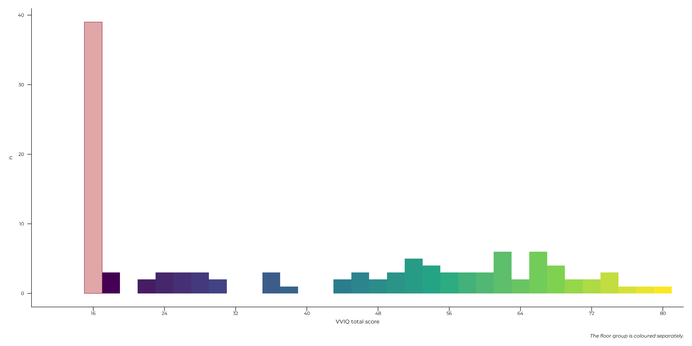

This page describes all 117 people who took part across the three task versions. The behavioural analyses use v1 alone and the questionnaire analyses pool all three; section 3 is where that split comes from.
One caveat about counting, because two totals circulate on this site and both are correct. One participant completed the task twice, once in v1 and once in v3, so there are 117 people and 118 person-sessions. Anything about a person (age, gender, education, imagery group) is counted per person below. Anything about a version is counted per session, because that participant did two different versions of the task and each one is a separate observation of the design.
# One row per person, for the demographic and imagery-group tables. The
# repeat participant's v1 session is the one kept.
participants <- all_data |>
dplyr::distinct(id, .keep_all = TRUE) |>
dplyr::mutate(
imagery_group = factor(
vviq_group_4,
levels = c("aphantasia", "hypophantasia", "typical", "hyperphantasia")
),
# Free-text gender, harmonised. Seven raw values across two languages
# describe three categories; the raw column is kept in `all_data`.
gender = dplyr::case_when(
gender == "f" ~ "Women",
gender == "m" ~ "Men",
TRUE ~ "Non-binary or self-described"
)
)
# One row per person-session, for anything counted by version.
sessions <- dplyr::distinct(all_data, id, version, .keep_all = TRUE)
extra <- dplyr::bind_rows(participants$extra_demographics)1. Overall
# Named `n_participants`, not `participants`: inside tibble() later
# expressions see earlier columns, so a column called `participants` would
# mask the data frame of the same name and every line below it would be
# operating on a count.
tibble::tibble(
n_participants = nrow(participants),
median_age = stats::median(participants$age),
age_range = paste(range(participants$age), collapse = " to "),
french_speaking = sum(participants$language == "fr"),
in_France = sum(extra$country == "fra", na.rm = TRUE)
) |>
knitr::kable(caption = "The pooled sample, across all three task versions")| n_participants | median_age | age_range | french_speaking | in_France |
|---|---|---|---|---|
| 117 | 33 | 18 to 71 | 112 | 112 |
participants |>
dplyr::count(gender) |>
dplyr::arrange(dplyr::desc(n)) |>
knitr::kable(caption = "Gender")| gender | n |
|---|---|
| Women | 86 |
| Men | 26 |
| Non-binary or self-described | 5 |
A predominantly French, predominantly women sample, skewed toward higher education: 54 of 117 hold a master’s degree or a doctorate. That matters mainly for generalisation, and it is the usual profile for online volunteer studies of this kind.
extra |>
dplyr::filter(!is.na(education)) |>
dplyr::mutate(
level = factor(sub("^isced_[0-9]+_", "", education))
) |>
dplyr::count(level) |>
dplyr::arrange(dplyr::desc(n)) |>
knitr::kable(caption = "Highest completed education (ISCED)")| level | n |
|---|---|
| master | 46 |
| licence | 35 |
| college | 16 |
| doctorat | 8 |
| high | 7 |
| BTS | 1 |
| CAP coiffure et vente | 1 |
| DUT | 1 |
| secondary | 1 |
2. By imagery group
Imagery vividness is measured by the VVIQ (Marks, 1973), whose sixteen items give a total between 16 and 80. Three different groupings of that score appear on this site, and they are not interchangeable, so they are set out together here.
| Grouping | Column | Definition |
|---|---|---|
| Four-way, used below | vviq_group_4 |
aphantasia = 16 (the scale floor), hypophantasia 17–32, typical 33–74, hyperphantasia ≥ 75 |
| Two-way, descriptive | vviq_group_2 |
aphantasia ≤ 32, typical ≥ 33 |
| Floor split, used by every model | not stored | at the floor (16) against everyone above it |
The four-way split divides the low end of the scale at the floor
itself, following Reeder et al. (2024).
That is narrower than the convention a reader may
assume: the widely used aphantasia cutoff of 32 is what
vviq_group_2 applies, and it corresponds here to aphantasia
plus hypophantasia. The two columns therefore both have a level
called aphantasia and the two levels are not the same
people.
The modelling pages use the third grouping, between participants at
the scale floor and everyone above it, and the analysis strategy page explains why.
It coincides with vviq_group_4’s aphantasia level and not
with vviq_group_2’s.
participants |>
dplyr::filter(!is.na(imagery_group)) |>
dplyr::summarise(
n = dplyr::n(),
median_age = stats::median(age),
women = sum(gender == "Women"),
.by = imagery_group
) |>
knitr::kable(caption = "By VVIQ group")| imagery_group | n | median_age | women |
|---|---|---|---|
| aphantasia | 39 | 34 | 28 |
| hypophantasia | 16 | 34 | 11 |
| typical | 55 | 28 | 43 |
| hyperphantasia | 5 | 47 | 3 |
That table counts 115 people rather than 117: 2 did not complete the VVIQ. They are absent from every model on this site as well, since every model reports a floor-group offset and neither can be placed on either side of the floor.
plot_vviq_histogram(participants$vviq_total_score, base_size = 16) +
labs(x = "VVIQ total score",
caption = "The floor group is coloured separately.")
The distribution is the reason the modelling pages treat vividness the way they do. It is not a smooth continuum with a low tail: it is a sharp, isolated spike at the scale minimum plus an irregular remainder above it. A model fitting one slope through all of it would describe neither part.
3. Recruitment, and why the versions are not interchangeable
This is a constraint carried into every other page.
sessions |>
dplyr::summarise(
n = dplyr::n(),
at_vviq_floor = sum(vviq_total_score == 16, na.rm = TRUE),
percent_floor = round(100 * mean(vviq_total_score == 16, na.rm = TRUE)),
typical_imagers = sum(vviq_group_2 == "typical", na.rm = TRUE),
median_age = stats::median(age),
.by = version
) |>
dplyr::arrange(version) |>
knitr::kable(caption = "By task version, counted per person-session")| version | n | at_vviq_floor | percent_floor | typical_imagers | median_age |
|---|---|---|---|---|---|
| v1 | 88 | 20 | 23 | 55 | 29.5 |
| v2 | 9 | 6 | 67 | 1 | 38.0 |
| v3 | 21 | 14 | 67 | 4 | 38.0 |
The three versions recruited different populations. v1 is roughly a quarter floor group; v2 and v3 are around two thirds, because later recruitment deliberately targeted participants with no visual imagery, partly through aphantasia community channels.
Two consequences run through the whole site.
The behavioural analyses use v1 only. Not because v2
and v3 are worse data, but because a group comparison needs both groups,
and the typical_imagers column above is where that fails:
v2 and v3 have single figures. The version
scope page sets out the full argument, including a case where
pooling the three produced an association that stratification
removed.
Most questionnaire analyses pool all three, because the instruments are identical and were administered identically in every version, so version is a property of the task rather than of the scales. That decision is checked rather than assumed on the beyond vividness page. The exception is psychometrics, which stays on v1 so that its reliabilities describe the sample the modelling pages use.
4. What was administered
Every participant completed the same battery in the same session: the VVIQ, the OSIVQ, the NIEQ, then the WM-FTT itself. The psychometrics page reports how those instruments behave in this sample, including one subscale that does not reach its reliability threshold and one scoring inconsistency between versions.
Field of study, occupation and recruitment route are recorded in
extra_demographics and are not analysed anywhere: they were
collected for description and possible exploratory analyses (not
conducted yet).
extra |>
dplyr::filter(!is.na(field)) |>
dplyr::mutate(field = sub("^isced_f_[0-9]+_", "", field)) |>
dplyr::count(field) |>
dplyr::arrange(dplyr::desc(n)) |>
head(6) |>
knitr::kable(caption = "Field of study or work, six most common")| field | n |
|---|---|
| busi_admin_law | 22 |
| social_journ_info | 17 |
| bio_phys_math_stat | 13 |
| arts_letters | 12 |
| health_protecc | 10 |
| comp_science | 7 |
Continuing through the Extended Online Report: this page follows task design. To keep reading in order, continue to scoring next. Or skip ahead to the analysis, which explains what the modelling pages do and why.
#> ─ Session info ───────────────────────────────────────────────────────────────
#> setting value
#> version R version 4.6.1 (2026-06-24)
#> os Ubuntu 22.04.5 LTS
#> system x86_64, linux-gnu
#> ui X11
#> language en
#> collate C.UTF-8
#> ctype C.UTF-8
#> tz UTC
#> date 2026-08-31
#> pandoc 3.8.3 @ /opt/hostedtoolcache/pandoc/3.8.3/x64/ (via rmarkdown)
#> quarto NA
#>
#> ─ Packages ───────────────────────────────────────────────────────────────────
#> package * version date (UTC) lib source
#> aphantasiaWMStrats * 0.1 2026-08-31 [1] local
#> bslib 0.12.0 2026-08-04 [2] CRAN (R 4.6.1)
#> cachem 1.1.0 2024-05-16 [2] CRAN (R 4.6.1)
#> cli 3.6.6 2026-04-09 [2] CRAN (R 4.6.1)
#> crayon 1.5.3 2024-06-20 [2] CRAN (R 4.6.1)
#> curl 8.0.0 2026-08-25 [2] CRAN (R 4.6.1)
#> desc 1.4.3 2023-12-10 [2] CRAN (R 4.6.1)
#> digest 0.6.39 2025-11-19 [2] CRAN (R 4.6.1)
#> dplyr 1.2.1 2026-04-03 [2] CRAN (R 4.6.1)
#> evaluate 1.0.5 2025-08-27 [2] CRAN (R 4.6.1)
#> farver 2.1.2 2024-05-13 [2] CRAN (R 4.6.1)
#> fastmap 1.2.0 2024-05-15 [2] CRAN (R 4.6.1)
#> fs 2.1.0 2026-04-18 [2] CRAN (R 4.6.1)
#> generics 0.1.4 2025-05-09 [2] CRAN (R 4.6.1)
#> ggplot2 * 4.0.3 2026-04-22 [2] CRAN (R 4.6.1)
#> glue 1.8.1 2026-04-17 [2] CRAN (R 4.6.1)
#> gtable 0.3.6 2024-10-25 [2] CRAN (R 4.6.1)
#> htmltools 0.5.9 2025-12-04 [2] CRAN (R 4.6.1)
#> jquerylib 0.1.4 2021-04-26 [2] CRAN (R 4.6.1)
#> jsonlite 2.0.0 2025-03-27 [2] CRAN (R 4.6.1)
#> knitr 1.51 2025-12-20 [2] CRAN (R 4.6.1)
#> labeling 0.4.3 2023-08-29 [2] CRAN (R 4.6.1)
#> lifecycle 1.0.5 2026-01-08 [2] CRAN (R 4.6.1)
#> magrittr 2.0.5 2026-04-04 [2] CRAN (R 4.6.1)
#> otel 0.2.0 2025-08-29 [2] CRAN (R 4.6.1)
#> pillar 1.11.1 2025-09-17 [2] CRAN (R 4.6.1)
#> pkgconfig 2.0.3 2019-09-22 [2] CRAN (R 4.6.1)
#> pkgdown 2.2.1 2026-07-07 [2] any (@2.2.1)
#> R6 2.6.1 2025-02-15 [2] CRAN (R 4.6.1)
#> ragg 1.5.2 2026-03-23 [2] CRAN (R 4.6.1)
#> RColorBrewer 1.1-3 2022-04-03 [2] CRAN (R 4.6.1)
#> renv 1.0.7 2024-04-11 [2] RSPM (R 4.6.1)
#> rlang 1.3.0 2026-07-05 [2] CRAN (R 4.6.1)
#> rmarkdown 2.31 2026-03-26 [2] CRAN (R 4.6.1)
#> S7 0.2.2 2026-04-22 [2] CRAN (R 4.6.1)
#> sass 0.4.10 2025-04-11 [2] CRAN (R 4.6.1)
#> scales 1.4.0 2025-04-24 [2] CRAN (R 4.6.1)
#> sessioninfo 1.2.4 2026-06-04 [2] CRAN (R 4.6.1)
#> showtext 0.9-8 2026-03-21 [2] CRAN (R 4.6.1)
#> showtextdb 3.0 2020-06-04 [2] CRAN (R 4.6.1)
#> sysfonts 0.8.9 2024-03-02 [2] CRAN (R 4.6.1)
#> systemfonts 1.3.2 2026-03-05 [2] CRAN (R 4.6.1)
#> textshaping 1.0.5 2026-03-06 [2] CRAN (R 4.6.1)
#> tibble 3.3.1 2026-01-11 [2] CRAN (R 4.6.1)
#> tidyselect 1.2.1 2024-03-11 [2] CRAN (R 4.6.1)
#> vctrs 0.7.3 2026-04-11 [2] CRAN (R 4.6.1)
#> viridisLite 0.4.3 2026-02-04 [2] CRAN (R 4.6.1)
#> withr 3.0.3 2026-06-19 [2] CRAN (R 4.6.1)
#> xfun 0.60 2026-07-09 [2] CRAN (R 4.6.1)
#> yaml 2.3.12 2025-12-10 [2] CRAN (R 4.6.1)
#>
#> [1] /tmp/Rtmp71i6jb/temp_libpath868c7c39749d
#> [2] /home/runner/.cache/R/renv/library/aphantasiaWMStrats-f7ce8556/linux-ubuntu-jammy/R-4.6/x86_64-pc-linux-gnu
#> [3] /home/runner/.cache/R/renv/sandbox/linux-ubuntu-jammy/R-4.6/x86_64-pc-linux-gnu/e7c0fad7
#> * ── Packages attached to the search path.
#>
#> ──────────────────────────────────────────────────────────────────────────────